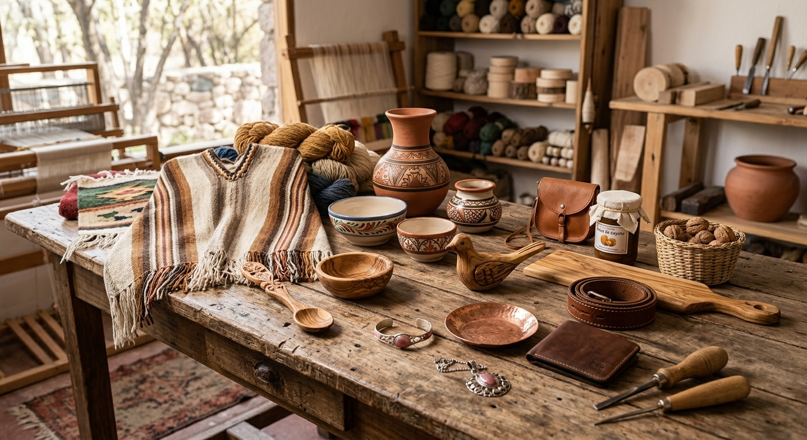
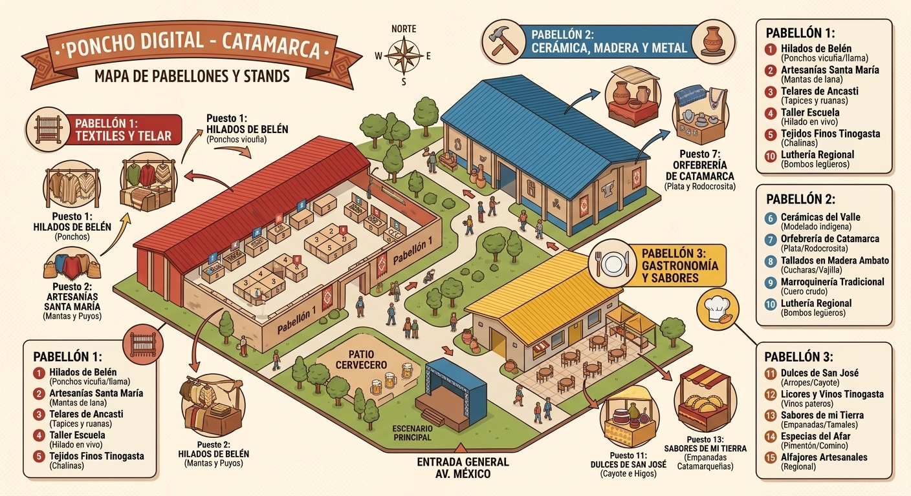

¡Bienvenidos a Poncho Digital!
La plataforma oficial de la Fiesta Nacional e Internacional del Poncho. Un espacio pensado para conectar a visitantes, artesanos y productores regionales. Explora nuestro catálogo virtual, descubre la riqueza cultural de nuestros pabellones y conoce la historia detrás de cada prenda textil, artesanía y producto regional de nuestra provincia.

¿Qué vas a encontrar en Poncho Digital?
Descubrí la diversidad de la artesania catamarqueña y de varias provincias del pais reunida en un solo lugar. Artesanos de distintas partes del pais presentan sus piezas desde los más finos tejidos en telar, poncho de vicuña y cerámica tradicional , hasta orfebrería, cuero y sabores regionales, compartiendo la riqueza de sus técnicas y talentos .

CROQUIS DE LOS STANDS
Ubicados en el corazón de San Fernando del Valle de Catamarca, en el Predio Ferial Catamarca. Un espacio accesible y preparado para recibir a visitantes de todo el país y del mundo , donde podrás recorrer los pabellones y carpas de exposición, talleres en vivo y sectores gastronómicos.

UBICACION
Visitános en el Predio Ferial Catamarca. Usá el mapa interactivo para ver los accesos principales y llegar sin problemas.
COMENTARIOS Y SUGERENCIAS
Tu opinión nos ayuda a seguir creciendo. Contanos qué te pareció la plataforma, dejanos tus sugerencias , opinion , criticas o compartí tu experiencia sobre los artesanos y sus productos. ¡Queremos leerte!"